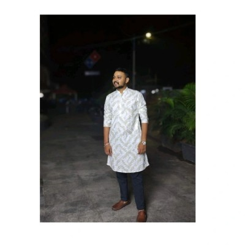

Shubham Jawalkar
MIS Executive & Campaign Coordinator
MIS Executive & Operations experience with over 2.5 years of experience combining focus on reporting, analytics, automation and team leadership and operational support. Skilled in transforming raw data into actionable business insights through Excel, VBA automation& MSSQL. Adept at KPI monitoring, SLA tracking, campaign analytics, and delivering client-ready reports that drive process improvements and decision-making efficiency.
Download ResumeSkills
MIS Reporting & KPI Tracking
Advanced Excel (Pivot, Macros)
VBA Automation & SQL
Power BI & Dashboards
Campaign Analytics & ROI
Client Reporting & SLA
Experience
Campaign Coordinator
Candorworks Pvt. Ltd | Apr 2024 – Present- Built KPI & SLA dashboards for campaign monitoring
- Automated MIS reports using VBA & SQL
- Reduced reporting time by ~40 minutes per report
- Prepared client-ready reports and insights
MIS Executive
Candorworks Pvt. Ltd | May 2023 – Apr 2024- Prepared daily & monthly delivery reports
- Maintained campaign-wise lead trackers
- Worked with advanced Excel formulas & pivots